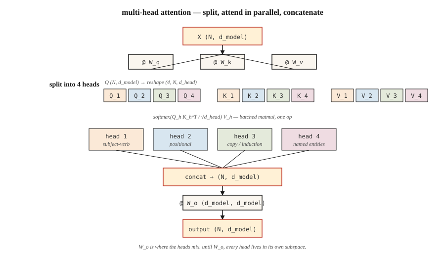

Multi-Head Attention
One attention head learns one relation at a time. Eight heads learn eight. Heads are free. Take more of them.
- Type
- Build
- Languages
- Python
- Prerequisites
- Phase 7 · 02 (Self-Attention from Scratch)
- Time
- ~75 minutes
#The Problem
A single self-attention head computes one attention matrix. That matrix captures one kind of relationship — usually the one that minimizes loss on whatever the training signal is. If your data has subject-verb agreement, co-reference, long-range discourse, and syntactic chunking all tangled together, a single head smears them into a single soft-max distribution and loses half the signal.
The fix from the 2017 Vaswani paper: run several attention functions in parallel, each with its own Q, K, V projections, and concatenate the outputs. Each head operates in a smaller subspace of dimension d_model / n_heads. Total parameters stay the same. Expressive power goes up.
Multi-head attention is the default every transformer in 2026 ships with. The only argument is about how many heads and whether keys and values share projections (Grouped-Query Attention, Multi-Query Attention, Multi-head Latent Attention).
#The Concept

Split. Take X of shape (N, d_model). Project to Q, K, V each of shape (N, d_model). Reshape to (N, n_heads, d_head) where d_head = d_model / n_heads. Transpose to (n_heads, N, d_head).
Attend in parallel. Run scaled dot-product attention inside each head. Each head produces (N, d_head). The heads operate on different subspaces of the embedding and never talk during the attention computation itself.
Concatenate and project. Stack heads back to (N, d_model) and multiply by a learned output matrix W_o of shape (d_model, d_model). W_o is where heads get to mix.
Why it works. Each head can specialize without competing with the others for representational budget. Probing studies from 2019–2024 show distinct head roles: positional heads, head that attends to the previous token, copy heads, named-entity heads, induction heads (which underlie in-context learning).
The 2026 lineage of variations:
| Variant | Q heads | K/V heads | Used by |
|---|---|---|---|
| Multi-head (MHA) | N | N | GPT-2, BERT, T5 |
| Multi-query (MQA) | N | 1 | PaLM, Falcon |
| Grouped-query (GQA) | N | G (e.g. N/8) | Llama 2 70B, Llama 3+, Qwen 2+, Mistral |
| Multi-head latent (MLA) | N | compressed to low-rank | DeepSeek-V2, V3 |
GQA is the modern default because it cuts KV-cache memory by a factor of N/G while keeping nearly full quality. MLA goes further by compressing K/V into a latent space, then projecting back at compute time — costs FLOPs, saves a lot more memory.
#Build It
#Step 1: split heads from the single-head attention we already have
Take the SelfAttention from Lesson 02 and wrap it with a split/concat pair. See code/main.py for a numpy implementation; the logic is:
def split_heads(X, n_heads):
n, d = X.shape
d_head = d // n_heads
return X.reshape(n, n_heads, d_head).transpose(1, 0, 2) # (heads, n, d_head)
def combine_heads(H):
h, n, d_head = H.shape
return H.transpose(1, 0, 2).reshape(n, h * d_head)One reshape and one transpose. No loop. This is exactly what PyTorch does under nn.MultiheadAttention.
#Step 2: run scaled-dot-product attention per head
Each head gets its own slice of Q, K, V. Attention becomes a batched matmul:
def mha_forward(X, W_q, W_k, W_v, W_o, n_heads):
Q = X @ W_q
K = X @ W_k
V = X @ W_v
Qh = split_heads(Q, n_heads) # (heads, n, d_head)
Kh = split_heads(K, n_heads)
Vh = split_heads(V, n_heads)
scores = Qh @ Kh.transpose(0, 2, 1) / np.sqrt(Qh.shape[-1])
weights = softmax(scores, axis=-1)
out = weights @ Vh # (heads, n, d_head)
concat = combine_heads(out)
return concat @ W_o, weightsOn real hardware Qh @ Kh.transpose(...) is one bmm. The GPU sees a single batched matmul of shape (heads, N, d_head) × (heads, d_head, N) -> (heads, N, N). Adding heads is free.
#Step 3: Grouped-Query Attention variant
Only the key and value projections change. Q gets n_heads groups; K and V get n_kv_heads < n_heads groups and are repeated to match:
def gqa_project(X, W, n_kv_heads, n_heads):
kv = split_heads(X @ W, n_kv_heads) # (kv_heads, n, d_head)
repeat = n_heads // n_kv_heads
return np.repeat(kv, repeat, axis=0) # (n_heads, n, d_head)At inference this saves memory because only n_kv_heads copies live in the KV cache, not n_heads. Llama 3 70B uses 64 query heads with 8 KV heads — an 8× cache shrink.
#Step 4: probe what each head learned
Run MHA on a short sentence with 4 heads. For each head, print the (N, N) attention matrix. You'll see different heads pick out different structure even with random initialization — that's partly signal, partly rotational symmetry in the subspaces.
#Use It
In PyTorch, the one-line version:
import torch.nn as nn
mha = nn.MultiheadAttention(embed_dim=512, num_heads=8, batch_first=True)GQA as of PyTorch 2.5+:
from torch.nn.functional import scaled_dot_product_attention
# scaled_dot_product_attention auto-dispatches Flash Attention on CUDA.
# For GQA, pass Q of shape (B, n_heads, N, d_head) and K,V of shape
# (B, n_kv_heads, N, d_head). PyTorch handles the repeat.
out = scaled_dot_product_attention(q, k, v, is_causal=True, enable_gqa=True)How many heads? Rules of thumb from production models in 2026:
| Model size | d_model | n_heads | d_head |
|---|---|---|---|
| Small (~125M) | 768 | 12 | 64 |
| Base (~350M) | 1024 | 16 | 64 |
| Large (~1B) | 2048 | 16 | 128 |
| Frontier (~70B) | 8192 | 64 | 128 |
d_head almost always lands at 64 or 128. It is the unit of how much one head can "see." Drop below 32 and heads start fighting the scaling factor sqrt(d_head); go above 256 and you lose the "many small specialists" benefit.
#Ship It
See outputs/skill-mha-configurator.md. The skill recommends head count, kv-head count, and projection strategy for a new transformer given parameter budget, sequence length, and deployment target.
#Exercises
- Easy. Take the MHA from
code/main.pyand changen_headsfrom 1 to 16 withd_model=64fixed. Plot the loss of a tiny one-layer model on a synthetic copy task. Do more heads help, plateau, or hurt? - Medium. Implement MQA (one KV head shared across all query heads). Measure how much parameter count drops vs full MHA. Compute how much the KV-cache size shrinks at inference for N=2048.
- Hard. Implement a tiny version of Multi-head Latent Attention: compress K,V to a rank-
rlatent, store the latent in the KV cache, decompress at attention time. At whatrdoes cache memory cross below 1/8 of full MHA while quality stays within 1 bit of validation ppl?
#Key Terms
| Term | What people say | What it actually means |
|---|---|---|
| Head | "A single attention circuit" | One Q/K/V projection of dimension d_head = d_model / n_heads with its own attention matrix. |
| d_head | "Head dimension" | Per-head hidden width; almost always 64 or 128 in production. |
| Split / combine | "Reshape tricks" | (N, d_model) ↔ (n_heads, N, d_head) reshape+transpose around attention. |
| W_o | "Output projection" | (d_model, d_model) matrix applied after concatenating heads; where heads mix. |
| MQA | "One KV head" | Multi-Query Attention: single shared K/V projection. Smallest KV cache, some quality loss. |
| GQA | "The default since Llama 2" | Grouped-Query Attention with n_kv_heads < n_heads; repeats to match Q. |
| MLA | "DeepSeek's trick" | Multi-head Latent Attention: K,V compressed to low-rank latent, decompressed at attend time. |
| Induction head | "The circuit behind in-context learning" | A pair of heads that detect previous occurrences and copy what followed them. |
#Further Reading
- Vaswani et al. (2017). Attention Is All You Need §3.2.2 — the original multi-head spec.
- Shazeer (2019). Fast Transformer Decoding: One Write-Head is All You Need — the MQA paper.
- Ainslie et al. (2023). GQA: Training Generalized Multi-Query Transformer Models from Multi-Head Checkpoints — how to convert MHA to GQA after training.
- DeepSeek-AI (2024). DeepSeek-V2 Technical Report — MLA and why it beats MHA/GQA on cache memory.
- Olsson et al. (2022). In-context Learning and Induction Heads — mechanistic look at what heads actually do.
Nice. That's 5 minutes of Transformers Deep Dive behind you.
Continue to Positional Encoding — Sinusoidal, RoPE, ALiBi →